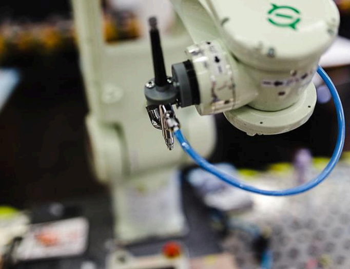
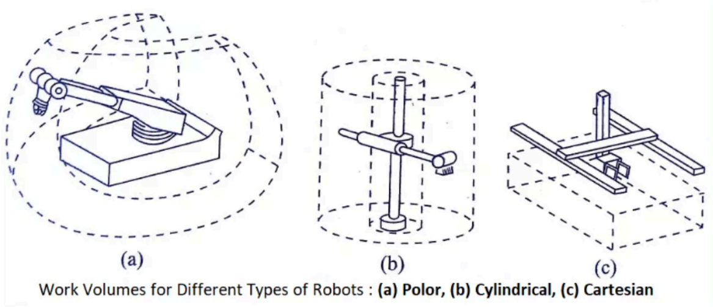

Los robots se han convertido en una parte integral de nuestro mundo, desde la automatización de tareas industriales hasta la asistencia en el cuidado de la salud. La robótica, la ciencia y tecnología que los crea, está en constante evolución, impulsando avances en áreas como la inteligencia artificial, la percepción sensorial y la interacción humano-robot.
La historia de la robótica se remonta a la Antigüedad, con los primeros autómatas mecánicos. Sin embargo, no fue hasta el siglo XX, con el desarrollo de la electrónica y la informática, que la robótica experimentó un crecimiento exponencial. A lo largo de las últimas décadas, se han distinguido cuatro generaciones de robots:
En los últimos años, la robótica ha experimentado un rápido avance en diversos campos, como:
La robótica tiene un impacto significativo en la sociedad, tanto en el ámbito social como económico. Los robots tienen el potencial de:
El desarrollo y la aplicación de la robótica también plantean desafíos éticos y legales que deben ser considerados:
La robótica es una tecnología en constante evolución con un enorme potencial para transformar nuestro mundo. Es importante aprovechar sus beneficios de forma responsable y ética, considerando los desafíos que presenta para la sociedad.
La robótica es un campo interdisciplinario que implica el diseño, construcción, operación y uso de robots. Estos son sistemas electromecánicos programables capaces de realizar tareas de forma autónoma o semi-autónoma. Algunas áreas clave de la robótica incluyen:
La robótica tiene aplicaciones en una amplia gama de industrias como manufactura, logística, exploración espacial, medicina, construcción, agricultura y muchas más. Los robots industriales son ampliamente utilizados en líneas de ensamblaje para tareas repetitivas de alta precisión. Los robots de servicio son empleados para tareas domésticas, entretenimiento o asistencia personal.
En cuanto al volumen de trabajo, la robótica es un campo en rápido crecimiento impulsado por avances tecnológicos y una creciente demanda de automatización. Según la Federación Internacional de Robótica, en 2021 se instalaron alrededor de 510,000 robots industriales en fábricas de todo el mundo. Se espera que la demanda de robots industriales crezca a una tasa anual del 10% en la próxima década.
Para el desarrollo y operación de sistemas robóticos se requieren equipos multidisciplinarios que incluyen ingenieros mecánicos, eléctricos, de software, expertos en IA, técnicos y operadores calificados. A medida que la robótica avanza y se vuelve más ubicua, las oportunidades laborales en este campo seguirán creciendo en los próximos años.